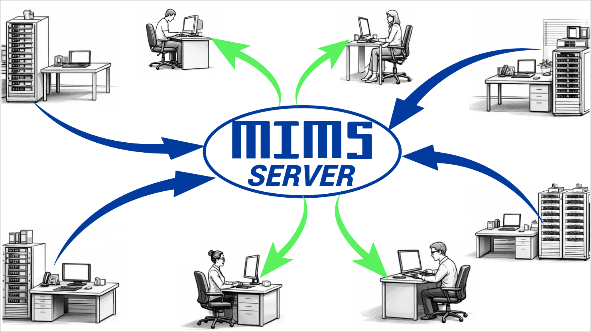

MIMS Server — Data Management
The centralised backbone of the Maccor data pipeline. MIMS Server runs on a dedicated network PC, automatically gathering raw binary data from every connected tester, creating safe backups, generating ASCII exports, and keeping procedure files synchronised — without operator intervention.
Automatic, Secure, Network-Wide Data Collection
One dedicated server PC handles backup and conversion for every Maccor tester in the lab — up to hundreds of channels across multiple systems.
Lab Network Architecture — MIMS Server in Context

What MIMS Server Does
MIMS Server performs fully automatic, safe, and secure collection of data from multiple battery test systems over a local area network. It must be installed on a dedicated PC separate from any tester PC — the server software requires compute resources that would conflict with the real-time demands of test execution. Once configured and running, it operates in the background without operator intervention, gathering data from all connected testers on a user-defined schedule ranging from once per day down to twice per minute.
What the Server Collects and Stores
- Raw binary data files: Verbatim copy of every .DAT file from every tester's Active and Archive directories — the primary backup, stored in tester-named subdirectories
- Configuration files: System.cfg / System.ini files from each tester, enabling full recovery if a tester PC fails
- Calibration files: Calibration records backed up alongside configuration data
- ASCII exports (optional): Tab-separated text files generated automatically from the binary data — field selection is configurable; files land in a network-accessible ASCII Data directory
- Formation tray summary (optional): ASCII summary of grade, capacity, energy, and impedance per cell for Model 5300 formation systems
- Indexed data files: Converted binary format that MIMS Client reads for charting and statistical analysis
Setting Up the Server
Configuration is done once through the Settings dialog and stored in MIMSserver2.ini. Key setup parameters:
- Timing: Base time (fixed daily anchor point) and frequency — up to 2,880 gathers per 24 hours (2 per minute)
- Partial gathering: Server adds only new data appended since the last gather — minimises network traffic on active channels
- Delete archived files: Optionally removes raw data from tester PCs after confirmed copy to the server (24-hour minimum delay enforced)
- Gather active channels: Enables live channel collection — recommended for R&D labs, typically disabled for formation systems
- Minimum free HD space: Server halts gathering and alerts when disk space falls below threshold
- ASCII field selection: Move fields from the Available list to the Output list to define exactly which columns appear in the ASCII export
Configuring the ASCII Export
When ASCII output is enabled, the server produces tab-separated text files that any spreadsheet can open directly. Available configuration options include:
- Individual field selection: Cycle, Step, Date-Time, Voltage, Current, Capacity (Ah), Energy (Wh), all auxiliary channels, SMBus fields, loop counters
- Header and units row formatting per field
- Comma as decimal separator option for European locale compatibility
- Formation ASCII output for Model 5300 tray data
- Use raw file date option — ASCII files inherit the date of the source binary, keeping both file types grouped under the same month folder
- ODBC-compatible output for direct connection to MS Excel Query, MS Access, and third-party statistical packages
Centralised Procedure Management
MIMS Server can be configured to maintain a master repository of Build Test procedure files (.bt2) and synchronise them automatically to all connected tester PCs. When a procedure is updated on the server, all tester clients receive the new version at the next synchronisation — eliminating version drift across a multi-tester lab and ensuring every channel is running the approved procedure. This feature is particularly valuable in regulated environments where procedure traceability is required.
Frequently Asked Questions
Can MIMS Server run on the same PC as the tester software?
No — MIMS Server requires a dedicated PC separate from any Maccor tester system PC. The server software requires compute resources that conflict with the real-time demands of test execution. MIMS Client, by contrast, can be installed on the tester PC or any networked PC.
What happens if the server PC is offline during a test?
Nothing — the testers continue running normally and accumulate data locally. When the server comes back online, it performs a catch-up gather and picks up all data generated during the outage. The Partial Gathering option ensures only new records are transferred, keeping the sync efficient.
How do clients access the data?
MIMS Client connects to the server over the network and accesses both the indexed data files for graphing and the ASCII directory for spreadsheet import. Read access to the ASCII Data directory can be granted to any network user, making test data accessible to analysts without MIMS Client installed.
Continue in the Suite
- MacTest — Test Execution
- Build Test — Procedure Editor
- MIMS Client - Data Analysis
- MIMS Server — Data Management
- Data Export — Convert Data to ASCII
- Software Suite